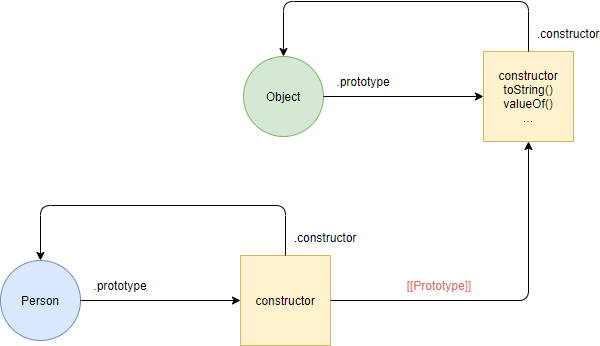
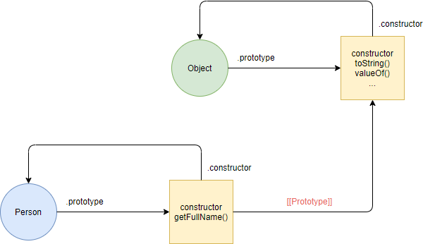

A Person função tem a prototype propriedade que faz referência a um objeto anônimo. O objeto anônimo possui uma constructor propriedade que faz referência à Person função.
JavaScript define o getFullName()método no Person.prototype objeto assim:
Javascript cria dois objetos p1 e p2. Esses objetos se vinculam ao Person.prototype objeto por meio da [[Prototype]] ligação: